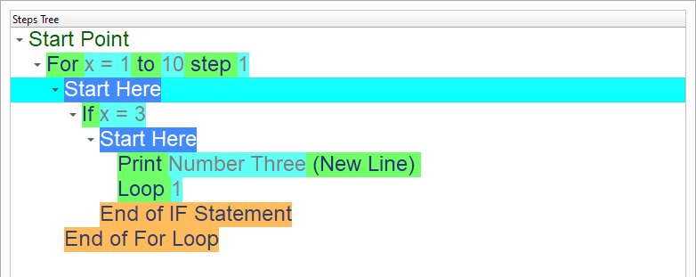
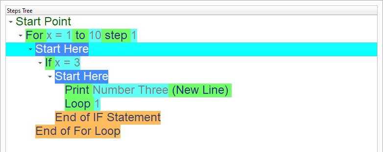
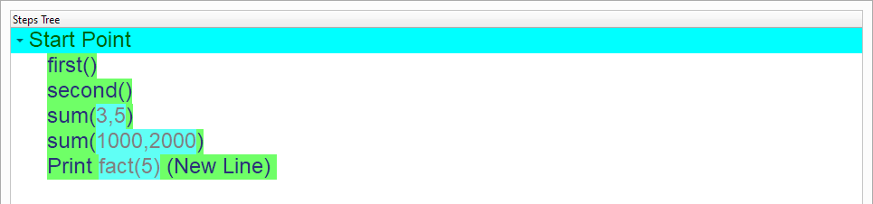
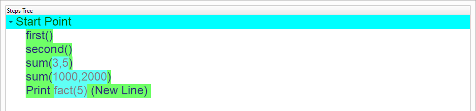
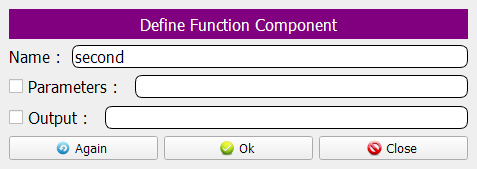
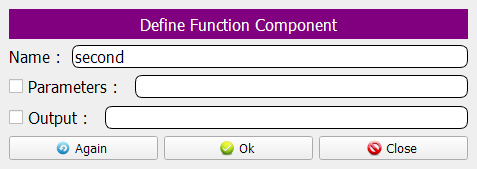
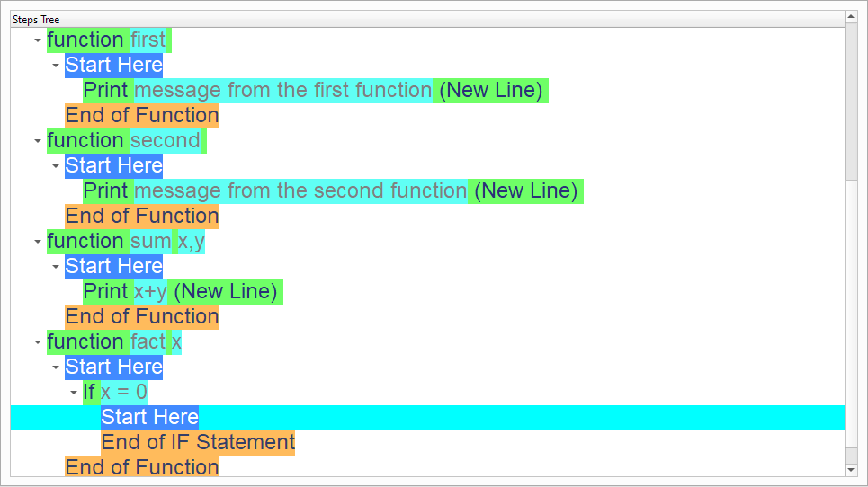
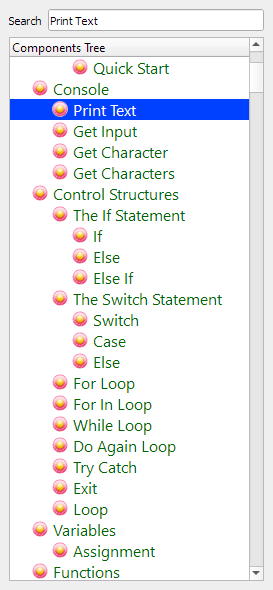
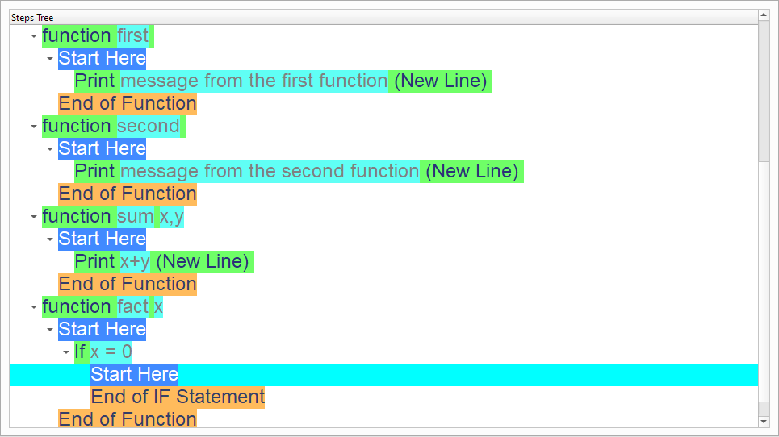
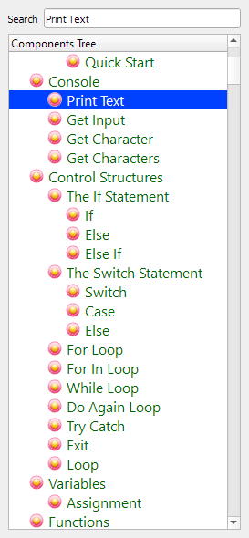

Using Functions¶
In this chapter we are going to learn about the Using Functions
Introduction¶
We can create this program quickly using the Quick Start component
Program Steps¶
After selecting the (Using Functions) template, we will get the next steps in the Goal Designer

Creating the Program¶
To create this program we will use the next components
Call Function
If Statement
Else
Define Function
Print Text
Return


 


 



 



 


